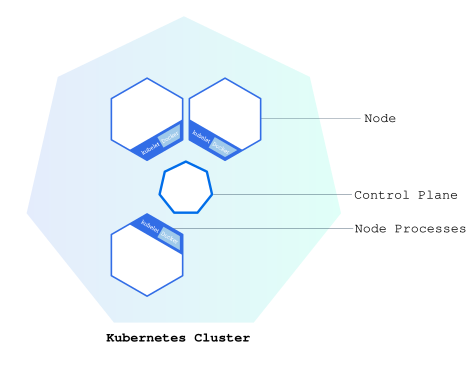

Objectives
- Learn what a Kubernetes cluster is.
- Learn what Minikube is.
- Start a Kubernetes cluster on your computer.
Before you begin
This tutorial assumes that you have already installed
minikube. See minikube start for
installation instructions.
Note:
Only execute instructions in step 1: Installation. The rest is covered in this tutorial.
You also need to install kubectl. See Install tools for installation
instructions.
The shell commands in this tutorial use POSIX shell syntax, which is
supported by the default shells on most Linux and macOS systems (for
example, bash, zsh, or sh). Windows users must use a POSIX-compatible
shell such as Windows
Subsystem for Linux (WSL) or Git Bash to run the commands as
written. Commands that use export, $(), and
similar constructs are not compatible with PowerShell
or the Windows Command Prompt.
Kubernetes Clusters
Note:
Kubernetes is a production-grade, open-source platform that orchestrates the placement (scheduling) and execution of application containers within and across computer clusters.
Kubernetes coordinates a highly available cluster of computers that are connected to work as a single unit. The abstractions in Kubernetes allow you to deploy containerized applications to a cluster without tying them specifically to individual machines. To make use of this new model of deployment, applications need to be packaged in a way that decouples them from individual hosts: they need to be containerized. Containerized applications are more flexible and available than in past deployment models, where applications were installed directly onto specific machines as packages deeply integrated into the host. Kubernetes automates the distribution and scheduling of application containers across a cluster in a more efficient way. Kubernetes is an open-source platform and is production-ready.
A Kubernetes cluster consists of two types of resources:
- The Control Plane coordinates the cluster
- Nodes are the workers that run applications
Cluster Diagram

The Control Plane is responsible for managing the cluster. The Control Plane coordinates all activities in your cluster, such as scheduling applications, maintaining applications' desired state, scaling applications, and rolling out new updates.
Note:
Control Planes manage the cluster and the nodes that are used to host the running applications.
A node is a VM or a physical computer that serves as a worker machine in a Kubernetes cluster. Each node has a Kubelet, which is an agent for managing the node and communicating with the Kubernetes control plane. The node should also have tools for handling container operations, such as containerd or CRI-O. A common and supported deployment model runs Kubernetes control plane components on dedicated control plane nodes.
When you deploy applications on Kubernetes, you tell the control plane to start the application containers. The control plane schedules the containers to run on the cluster's nodes. Node-level components, such as the kubelet, communicate with the control plane using the Kubernetes API, which the control plane exposes. End users can also use the Kubernetes API directly to interact with the cluster.
A Kubernetes cluster can be deployed on either physical or virtual machines. To get started with Kubernetes development, you can use Minikube. Minikube is a lightweight Kubernetes implementation that creates a VM on your local machine and deploys a simple cluster containing only one node. Minikube is available for Linux, macOS, and Windows systems. The Minikube CLI provides basic bootstrapping operations for working with your cluster, including start, stop, status, and delete.
Create a minikube cluster
To start a minikube cluster:
minikube startTo verify the cluster status:
minikube statusFor a complete walkthrough including deploying your first app and exploring the Kubernetes dashboard, see the Hello Minikube tutorial.
What's next
- Tutorial Deploy an App.
- Learn more about Cluster Architecture.